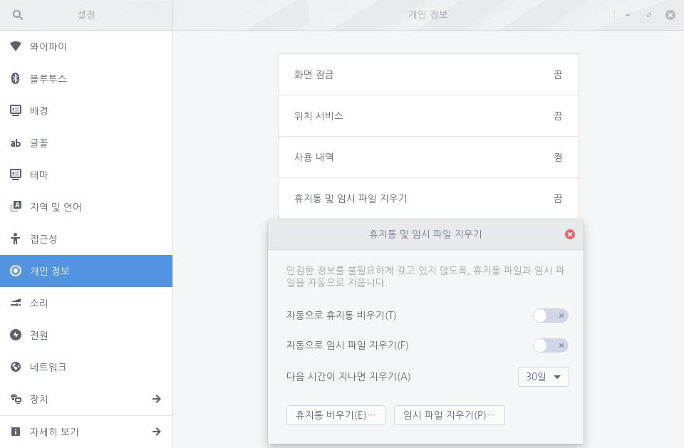

컴퓨터에서 휴지통을 비우거나 더 이상 필요없는 임시 파일을 제거하여 하드 디스크의 용량을 확보할 수 있습니다. 사용자가 직접 휴지통 및 임시 파일을 지우거나 컴퓨터가 자동으로 지우도록 설정할 수 있습니다. 다음 단계를 수행하여 휴지통 및 임시 파일 지우기를 설정합니다.1. 좌측 하단의 [시작]아이콘을 클릭하고 검색 창에 "설정"을 입력한 후 [설정] 애플리케이션을 실행합니다.
 2. [설정] 애플리케이션 사이드 바에서 [개인 정보]를 클릭한 후 [휴지통 및 임시 파일 지우기]를 클릭합니다.
2. [설정] 애플리케이션 사이드 바에서 [개인 정보]를 클릭한 후 [휴지통 및 임시 파일 지우기]를 클릭합니다.
3. [자동으로 휴지통 비우기] 및 [자동으로 임시 파일 지우기]의 설정 단추를 오른쪽으로 밀어 켭니다. [다음 시간이 지나면 지우기]에서 날짜를 변경하여 휴지통으로 이동한 파일 및 생성된 임시 파일을 해당 날짜 이후에 삭제되도록 설정합니다.[휴지통 비우기] 및 [임시 파일 지우기]를 클릭하여 사용자가 직접 휴지통 및 임시 파일을 지울 수 있습니다. 휴지통을 거치지 않고 파일을 즉시 삭제할 수 있습니다. 이에 대한 자세한 내용은 영구 파일 삭제를 참고하세요.